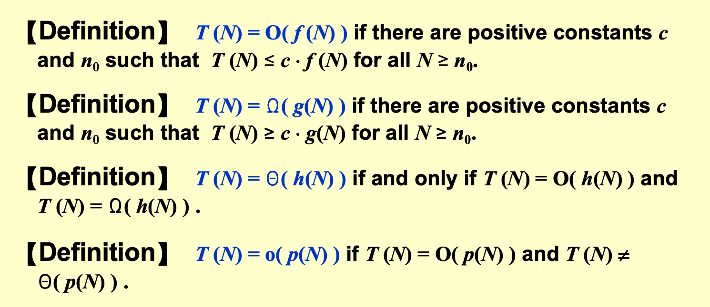
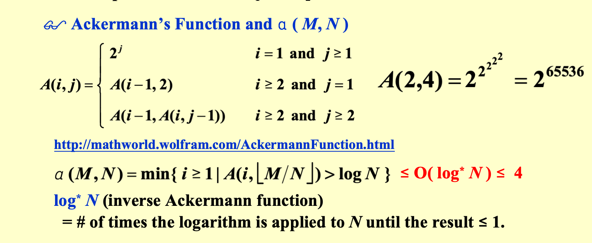
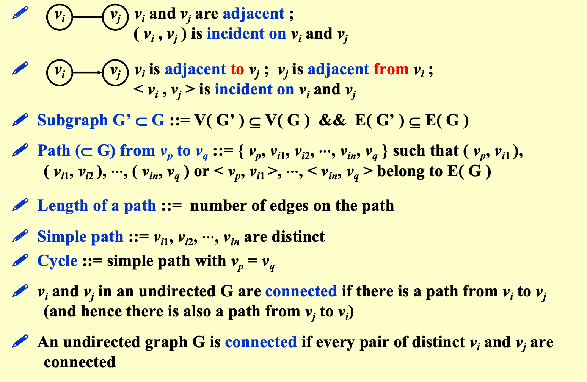
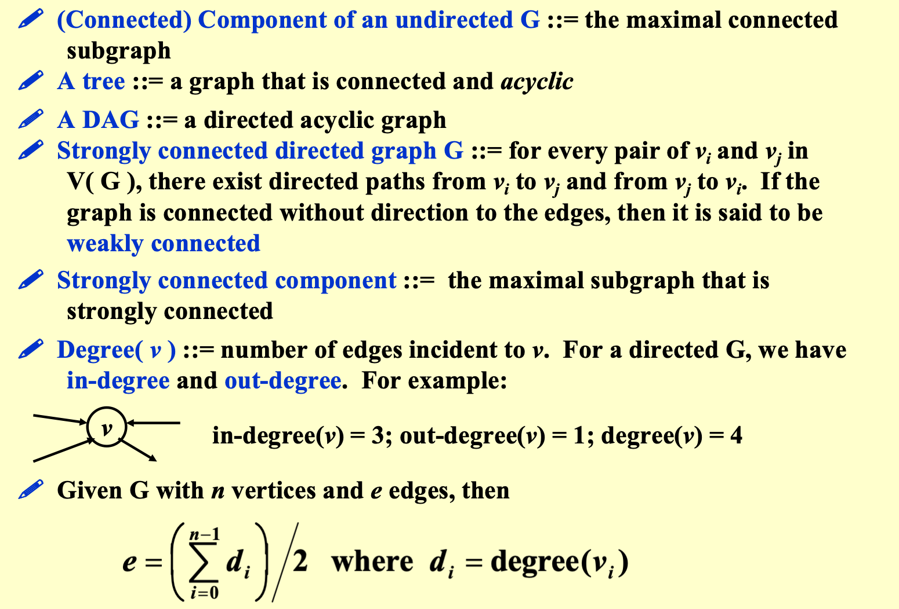
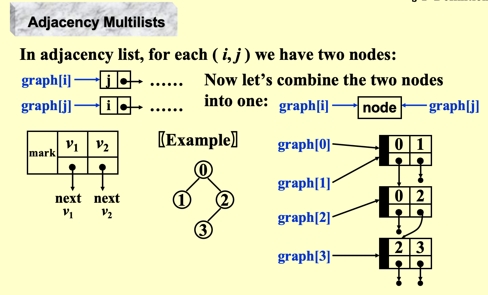
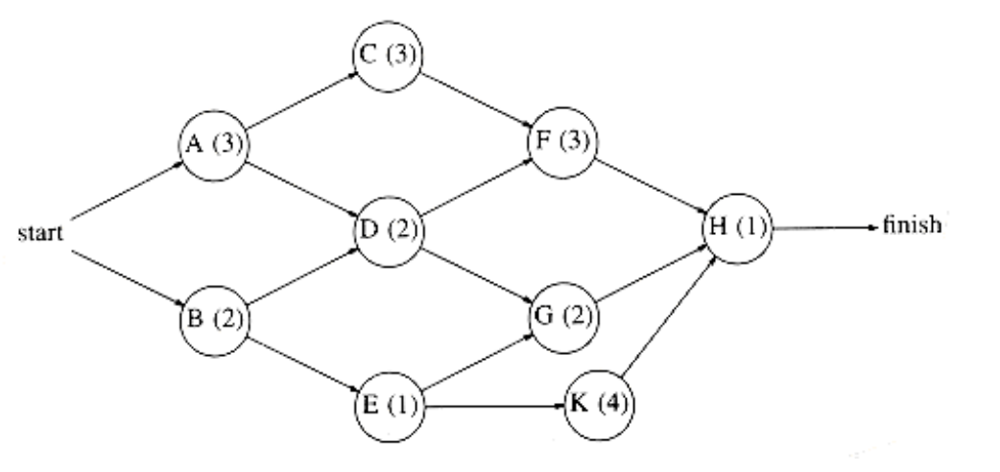
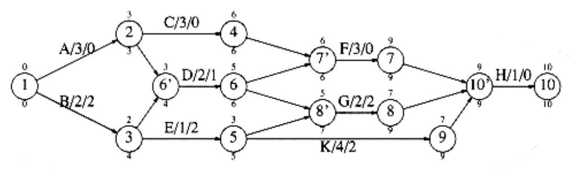
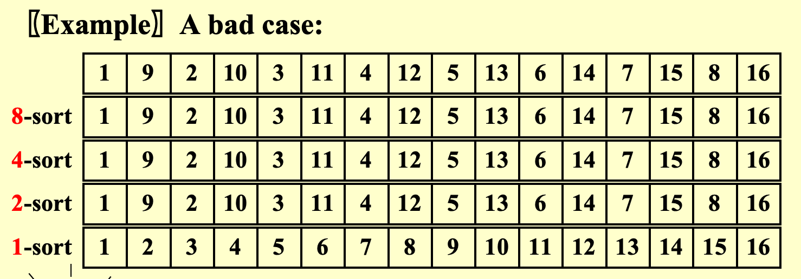

数据结构基础¶
Prelimiaries¶
4个notation¶

Algorithm analysis¶
Divide and conquer（分治法）: T(n)=2T(n/2)+c*n; reduce problem size，最终time complexity为 \(O(n\log n)\)
On-line Algorithm （在线算法）: 来一个数据，处理一个数据；不需要所有data都存好再处理。节省内存空间，加快处理速度。最终time complexity为 \(O(n)\)
ADT
Data type = {Objects} + {Operations}
Arrays:
- pros: sequential mapping
- cons: max size is fixed;Insertion and Deletion takes only O(n) times ,but involves extra data movement.
List:
-
pros: allocate flexibly; Insertion and Deletion is relatively convenient
-
cons:
not sequentially distributed, interrogate requires O(n) times;
malloc(the system allocate memory for you) takes more time than directly sequentially mapping.
判断List是否成环：两个ptr，一个每次走一步，另一个每次走两步，最后是否会相等（碰到NULL之前）
The List ADT¶
List的基本操作：
- Find the length of a list
- Print all the items in a list
- make an empty list
- find the k-th item of a list
- Insert a new item after the k-th item
- Delete an item from a list
- Next item/previous item
有3种实现方式：
- Array implementation:
- 需要先估计maxsize
- Find_Kth takes O(1) time
- Insertion and deletion需要花O(N)时间，且需要移动data
- Linked list implementation:
- 一般会加一个dummy head作为哨兵💂
- 优化版：Doubly linked list，见下图


- 适用于Polynomial ADT的表示，避免了过多存储空间的浪费
- 可用于构建Multilist，适用于商品和消费者、课程和选课学生之间的关系
- (self-study) The sparse matrix representation

- Cursor implementation :
首先，明确一下 linked list 所必须有的特征：
- 数据存储在一些结构体(structure)中，每一个结构体都包含所存数据和指向下一个结构体的指针
- 可以通过
malloc和free来在global memory中创建(obtain)和回收(release)结构体
Cursor的想法是
- 开一个structure类型的全局数组（称为CURSOR_SPACE），用每个structure的index来模拟地址，于是它的
next就设为int类型，这样就模拟了特征1 - 为了能够
malloc和freeCURSOR_SPACE 中的元素(cell)，会有一个freelist 来存放那些没有被malloc到list中的cell，并用cell[0]作为header
为了标识已被malloc的list，通常会用头一个cell作为dummy header
Code as follows:
```c typedef unsigned int node_ptr; struct node { element_type element; node_ptr next; }; typedef node_ptr LIST; typedef node_ptr position; struct node CURSOR_SPACE[ SPACE_SIZE ]; // CURSOR_SPACE array
p = CURSOR_SPACE[0].next; CURSOR_SPACE[0].next = CURSOR_SAPCE[p].next; // malloc the cell after CURSOR_SPACE[0], // CURSOR_SPACE[0] is the dummy header
CURSOR_SPACE[p].next = CURSOR_SPACE[0].next; CURSOR_SPCE[0].next = p; // free the list with header cell[p]
结构体数组的初始化如下：

Example :
| Slot | Element | Next |
|---|---|---|
| 0 | - | 6 |
| 1 | b | 9 |
| 2 | f | 0 |
| 3 | header | 7 |
| 4 | - | 0 |
| 5 | header | 10 |
| 6 | - | 4 |
| 7 | c | 8 |
| 8 | d | 2 |
| 9 | e | 0 |
| 10 | a | 1 |
对应：


其中，c0->c6->c4形成的环是freelist
ADT stack¶
Two implementations :
- Linked list (with a dummy header)：
基本逻辑：stack是list的header；stack中的element是list中的node
- Array：
基本逻辑：stack是一个structure；stack中的element是structure中的数组的元素
Code as follows
struct stack_record
{
unsigned int stack_size;
int top_of_stack;
element_type *stack_array;
};
typedef struct stack_record *STACK;
#define EMPTY_TOS (-1) /* Signifies an empty stack */
STACK create_stack( unsigned int max_elements )
{
STACK S;
/*1*/ if( max_elements < MIN_STACK_SIZE )
/*2*/ error("Stack size is too small");
/*3*/ S = (STACK) malloc( sizeof( struct stack_record ) );
/*4*/ if( S == NULL )
/*5*/ fatal_error("Out of space!!!");
/*6*/ S->stack_array = (element_type *)
malloc( sizeof( element_type ) * max_elements );
/*7*/ if( S->stack_array == NULL )
/*8*/ fatal_error("Out of space!!!");
/*9*/ S->top_of_stack = EMPTY_TOS;
/*10*/ S->stack_size = max_elements;
/*11*/ return S;
}
void dispose_stack( STACK S )
{
if( S != NULL )
{
free S->stack_array;
free S;
}
}
Error type:
- ADT error : a
popon an empty stack- Implementation error : a
pushon a full stack
Applications :
- symbols balancing Check if parenthesis ( ), brackets [ ], and braces { } are balanced.
Code omitted...
- calculator : Infix to Postfix Conversion
Infix expression: a + b * c - d / e
Prefix expression: - + a * b c / d e
Postfix expression: a b c * + d e / -
Example (Postfix expression) :
6 2 / 3 - 4 2 * + = 8
Procedure : Time complexity = O(N)
| Get token: 6 ( operand ) | Get token: 2 ( operand ) |
|---|---|
| Get token: / ( operator ) | Pop 6,2; Push 6/2=3 ( operand ) |
| Get token: - ( operator ) | Get token: 3 ( operand ) |
| Pop 3,3; Push 3-3=0 (operand) | Get token: 4 ( operand ) |
| Get token: 2 ( operand ) | Get token: * ( operator ) |
| Pop 4,2; Push 4*2=8 (operand) | Get token: + ( operator ) |
| Pop 0,8; Push 8 | Pop 8 |
可以看出，postfix表达式不需要考虑运算优先级 (precedence rules)，仅仅需要遍历表达式即可。
因此我们常常需要infix到postfix的conversion，这依赖于一个存放operator的stack
此处的conversion应该是指字符串的conversion，或者char数组的映射
- Conversion example :
a + b * c - d = a b c * + d -
转换原则：遍历时，遇到operand，直接append到result；遇到operator，分2种情况。若top(stack)的优先级>=这个operator，则pop stack，然后再比较此时的栈顶与该operator，直到<=或stack is empty；否则push op onto stack
- Example (with parenthesis) :
a * ( b + c ) / d = a b c + * d /
再添加一条原则即可：( 在压入stack前优先级高于所有op，在压入后优先级低于所有op；遇到)时，pop stack直到最近的(也被pop
Note : 乘方
^是从右向左结合的，与+-*/不同转换原理：我的总结是，若正在遍历的
op1优先级严格高，则放入栈中，后续操作时优先弹出；否则优先级低，应该将前面优先级高的都弹出后在放入栈中
关于recursion：recursion应该尽可能避免，一来容易爆系统栈，二来调用系统栈更费时。In general，recursion比non-recursion要慢~（虽然我没感觉）~
ADT queue¶
Array implementation :
struct QueueRecord {
int Capacity ; /* max size of queue */
int Front; /* the front pointer */
int Rear; /* the rear pointer */
int Size; /* Optional - the current size of queue */
ElementType *Array; /* array for queue elements */
} ;
Front一般指向第一个元素；Rear则指向最后一个元素；初始状态和空状态下，Rear设在Front前一位
为了充分利用queue的空间，通常使用circular queue，但此时由于full queue和empty queue时均为Rear = Front - 1，无法区分，所以只能
- 只用
Capacity - 1个单元，或者 - add
sizefield来区分full和empty
Chapter4 Tree¶
def : a Tree consists of
- 根结点root，记作
r - 0个或多个子树，每颗子树都通过有向弧(directed edge)从root指向它自身
Note:
- 子树不能相互连接，因此每颗子树都是某些子树的根节点
- 一棵N节点的树中有N-1条边(edge)。除根节点外，每个节点都有一条从它的root指向它的edge
concept :
- degree of a node : 此结点的子树数量
- degree of a tree : \(max\{degree(node):node\in tree\}\)
- Parent : 此结点的root
- Child : 此结点的子树
- Siblings : 同parent的children
- Leaf : degree为0的结点
- Path from n1 to nk : the unique sequence n1 , ... , ni , connected with edge
- Length of path （路径长度）: number of edge in the path
- Depth （深度）: 结点ni的深度为：从
r到ni的长度 - Height （高度）: 结点ni高度为：从ni沿edge顺下到某叶结点最长的路径
- Height of a tree = depth of a tree = depth(the deepest node)
- Ancestor : nodes on the unique path before ni
- Descendant : all nodes in ni's subtree
implementations :
-
linked list implementation is not good, 可以用二叉树来实现
-
FirstChild-NextSibling Representation则有统一的表示法

note : 上述表示方法不唯一，children的位置可以互换
Binary Tree（二叉树）¶
-
Def : 每个节点最多2个孩子的tree
-
binary tree可用于构建语法树(expression/syntax tree)
给出一个postfix expression，构建一个syntax tree
Ex : (a + b)*(c * (d + e)) = a b + c d e + * *

Tree traversals¶
- Preorder
void preorder ( tree_ptr tree )
{ if ( tree ) {
visit ( tree );
for (each child C of tree )
preorder ( C );
}
}
- Inorder
void inorder ( tree_ptr tree )
{ if ( tree ) {
inorder ( tree->Left );
visit ( tree->Element );
inorder ( tree->Right );
}
}
// iterative version using stack
void iter_inorder ( tree_ptr tree )
{ Stack S = CreateStack( MAX_SIZE );
for ( ; ; ) {
for ( ; tree; tree = tree->Left )
Push ( tree, S ) ;
tree = Top ( S ); Pop( S );
if ( ! tree ) break;
visit ( tree->Element );
tree = tree->Right; }
}
- Postorder
void postorder ( tree_ptr tree )
{ if ( tree ) {
for (each child C of tree )
postorder ( C );
visit ( tree );
}
}
- Levelorder (按hierarchy来visit), using queue
void levelorder ( tree_ptr tree )
{ enqueue ( tree );
while (queue is not empty) {
visit ( T = dequeue ( ) );
for (each child C of T )
enqueue ( C );
}
}
给出一棵syntax tree，则preorder traversal、inorder traversal、postorder traversal的结果正好是prefix、infix、postfix expression！
Threaded binary tree¶
在一棵full binary tree中，若有n个node，则共有2n个link，其中n-1个link指向非空，n+1个指向NULL，造成浪费，所以产生了Threaded binary tree的想法（指向NULL的link称为Thread）
- Rule1:若
node->Left == NULL，则将node->Left指向该node的inorder predecessor（前继） - Rule2:若
node->Right == NULL，则将node->Right指向该node的inorder successor（后继） - Rule3:没有loose thread，为此，设置了一个dummy header，使得
leftmost_node->Left、rightmost_node->Right都指向header
typedef struct ThreadedTreeNode *PtrTo ThreadedNode;
typedef struct PtrToThreadedNode ThreadedTree;
typedef struct ThreadedTreeNode {
int LeftThread; /* if it is TRUE, then Left */
ThreadedTree Left;/* is a thread, not a child ptr.*/
ElementType Element;
int RightThread; /* if it is TRUE, then Right */
ThreadedTree Right; /* is a thread, not a child ptr.*/
}

Search tree ADT : binary search tree（二分搜索树）¶
Properties of Binary tree¶
-
设
root在level 1，则level i最多有2i-1个结点；depth为k的树最多有2k+1-1个结点 -
设
n,n0,n1,n2分别为结点总个数，degree为0，1，2的结点数，则 $$ n=n_0+n_1+n_2 \ n-1=n_1+2n_2 \ $$ 可得 $$ n_0=n_2+1 $$
Binary Search Tree (BST)¶
功能：查找特定元素、最大、最小、插入、删除...
Find:
//Find:
Position Find( ElementType X, SearchTree T )
{
if ( T == NULL )
return NULL; /* not found in an empty tree */
if ( X < T->Element ) /* if smaller than root */
return Find( X, T->Left ); /* search left subtree */
else
if ( X > T->Element ) /* if larger than root */
return Find( X, T->Right ); /* search right subtree */
else /* if X == root */
return T; /* found */
}
//iterative Find:
Position Iter_Find( ElementType X, SearchTree T )
{
while ( T ) {
if ( X == T->Element )
return T ; /* found */
if ( X < T->Element )
T = T->Left ; /*move down along left path */
else
T = T->Right ; /* move down along right path */
} /* end while-loop */
return NULL ; /* not found */
}
FindMin / FindMax:
Position FindMin( SearchTree T )
{
if ( T == NULL )
return NULL; /* not found in an empty tree */
else
if ( T->Left == NULL ) return T; /* found left most */
else return FindMin( T->Left ); /* keep moving to left */
}
Position FindMax( SearchTree T )
{
if ( T != NULL )
while ( T->Right != NULL )
T = T->Right; /* keep moving to find right most */
return T; /* return NULL or the right most */
}
Insert:
SearchTree Insert( ElementType X, SearchTree T )
{
if ( T == NULL ) { /* Create and return a one-node tree */
T = malloc( sizeof( struct TreeNode ) );
if ( T == NULL )
FatalError( "Out of space!!!" );
else {
T->Element = X;
T->Left = T->Right = NULL; }
} /* End creating a one-node tree */
else /* If there is a tree */
if ( X < T->Element )
T->Left = Insert( X, T->Left );
else
if ( X > T->Element )
T->Right = Insert( X, T->Right );
/* Else X is in the tree already; we'll do nothing */
return T; /* Do not forget this line!! */
}
Delete:删除元素相对复杂，需要分情况
- 删除叶结点：直接删除即可
- 删除degree为1的结点：用它的孩子代替它
- 删除degree为2的结点：在n0的左子树中找到最右（也是不超过n0的最大结点）的结点，代替n0，并删除该替代结点；或在n0的右子树中找到最左的结点，代替n0，并删除该替代结点
SearchTree Delete( ElementType X, SearchTree T )
{
Position TmpCell;
if ( T == NULL ) Error( "Element not found" );
else if ( X < T->Element ) /* Go left */
T->Left = Delete( X, T->Left );
else if ( X > T->Element ) /* Go right */
T->Right = Delete( X, T->Right );
else /* Found element to be deleted */
if ( T->Left && T->Right ) { /* Two children */
TmpCell = FindMin( T->Right );
T->Element = TmpCell->Element;
T->Right = Delete( T->Element, T->Right );
}
else { /* One or zero child */
TmpCell = T;
if ( T->Left == NULL )
T = T->Right;
else if ( T->Right == NULL ) T = T->Left;
free( TmpCell );
}
return T;
}
Note:若deletion次数过多，可以考虑
LazyDeletion，并不直接删除元素，而是标记它为已被删除。可以减少系统操作，节省时间。
Priority Queues/Heap (堆)¶
用于快速查找最大/最小元素
ADT Model :
- Object : A finite ordered list with zero or more elements.
我的感觉是：存放时是无序的，在用heap的时候表现出有序性
- Operation :
```C Initialize( int MaxElements ); void Insert( ElementType X, PriorityQueue H ); ElementType DeleteMin( PriorityQueue H ); ElementType FindMin( PriorityQueue H );
Implementations :
- Array
- Linked List
- Ordered array
- Ordered linked list
Binary Heap¶
complete binary tree（完全二叉树）¶
按level order的index是连续的二叉树；
或者A binary tree with n nodes and height h is complete iff its nodes correspond to the nodes numbered from 1 to n in the perfect binary tree of height h.
于是一棵高度为h的完全二叉树的结点数在2h到2h+1-1之间，是一棵AVL tree。它的高度表达式为 \(h=[\log n]\) 。由于这种tree的parent和children的index之间的联系，它可以用数组来实现，即BT[n+1] // BT[0] is not used

它的母子、兄弟关系如下，很方便：

我们的Heap就可以用complete tree来实现，在它的基础上还需要具有Heap Order Property :
Def : A min tree is a tree in which the key value in each node is no larger than the key values in its children (if any). A min heap is a complete binary tree that is also a min tree. 即，一个node的key小于等于它的孩子的key。同理可定义 max tree
Heap initialization:
PriorityQueue Initialize( int MaxElements )
{
PriorityQueue H;
if ( MaxElements < MinPQSize )
return Error( "Priority queue size is too small" );
H = malloc( sizeof ( struct HeapStruct ) );
if ( H ==NULL )
return FatalError( "Out of space!!!" );
/* Allocate the array plus one extra for sentinel */
H->Elements = malloc(( MaxElements + 1 ) * sizeof( ElementType ));
if ( H->Elements == NULL )
return FatalError( "Out of space!!!" );
H->Capacity = MaxElements;
H->Size = 0;
H->Elements[ 0 ] = MinData; /* set the sentinel */
return H;
}
Basic Heap operation:
- Insertion : 先存放在
BT[H->size+1]，即complete tree的下一个位置，再一路向上swap
\(T(n) = O(\log(n))\)
/* H->Element[ 0 ] is a sentinel */
void Insert( ElementType X, PriorityQueue H )
{
int i;
if ( IsFull( H ) ) {
Error( "Priority queue is full" );
return;
}
for ( i = ++H->Size; H->Elements[ i / 2 ] > X; i / = 2 )
H->Elements[ i ] = H->Elements[ i / 2 ];
H->Elements[ i ] = X;
}
- DeleteMin : 把root删掉，再把
BT[H->size]放在root处，不断向下与较小的child进行swap
\(T(n) = O(\log(n))\)
ElementType DeleteMin( PriorityQueue H )
{
int i, Child;
ElementType MinElement, LastElement;
if ( IsEmpty( H ) ) {
Error( "Priority queue is empty" );
return H->Elements[ 0 ];
}
MinElement = H->Elements[ 1 ]; /* save the min element */
LastElement = H->Elements[ H->Size-- ]; /* take last and reset size */
for ( i = 1; i * 2 <= H->Size; i = Child ) { /* Find smaller child */
Child = i * 2;
if (Child != H->Size && H->Elements[Child+1] < H->Elements[Child])
Child++;
if ( LastElement > H->Elements[ Child ] ) /* Percolate one level */
H->Elements[ i ] = H->Elements[ Child ];
else break; /* find the proper position */
}
H->Elements[ i ] = LastElement;
return MinElement;
}
- Others
-
Percolate up :
DecreaseKey ( P, amount, H ): Lower the value of the key in the heap H at position P by a positive amount ofamountso other programs can run with highest priority -
Percolate down :
IncreaseKey ( P, amount, H ): Increase the value of the key in the heap H at position P by a positive amount ofamount, drop the priority of a process that is consuming excessive CPU time. -
Delete :
DecreaseKey(P, amount, H); DeleteMin(H)Remove the node at position P from the heap H …… delete the process that is terminated (abnormally) by a user.
-
BuildHeap :
先把 N 个input keys存放到empty Heap中；再从倒数第二层开始向下swap，height为h的node至多swap h次（leaf的height为0的情况下）
Theorem : For the perfect binary tree of height h containing 2h+1-1 nodes, the sum of the heights of the nodes is 2h+1-1-(h + 1).
因此，BuildHeap的time complexity是\(T(n) = O(n)\)
这就是堆排序(Heap sort)的核心。堆排的流程是先建堆，\(T(n)=O(n)\)，再进行n次DeletionMin ， $T(n)=O(n\log n) $，整体是 $T(n)=O(n\log n) $
- Application : 堆排和快排都是O(n logn)时间，当数据量很大，而只需要找出top 100的值时，就可以用堆排，比快排要高效
- D-Heaps：每个结点有D个孩子的heap
Disjoint set（并查集）¶
基本操作 : union find
Implementation : 链表、数组（下述5种算法以数组实现为基础）
5种算法：
-
Arbitrary union
-
Smart union + Union by size，每次将小树并入大树
S[root] = -size
-
Union by height，每次将矮树并入高树
S[root] = -height
-
Smart union with Path compression + Union by size with path compression (compatible) + Union by rank (incompatible, so the rank is an estimated height)
-
Union by rank implementation
SetType Find ( ElementType X, DisjSet S )
{ ElementType root, trail, lead;
for ( root = X; S[ root ] > 0; root = S[ root ] )
; /* find the root */
for ( trail = X; trail != root; trail = lead ) {
lead = S[ trail ] ;
S[ trail ] = root ;
} /* collapsing */
return root ;
}
- Union by rank的时间复杂度
Tarjan Lemma: 设有M (>=N) 次
find和N-1次Union，则存在常数k1, k2>0\(k_1M\alpha(M,N)\leq T(M,N)\leq k_2M\alpha(M,N)\)
其中\(\alpha\)函数和Ackermann’s函数有关，结论是\(\alpha(M,N)\leq O(\log*N)\leq4\)
因此，时间复杂度与M成线性关系

Chapter9 Graph¶
Definition¶
一个图用G(V,E)表示，其中V(vertex)为graph的顶点构成的集合，E(edge)为连接graph顶点的边构成的集合
规定：一个顶点不可与自己连接（不能有self-loop）
有向图：\(<v_i,v_j>\neq<v_j,v_i>\)
无向图：\(<v_i,v_j>=<v_j,v_i>\)
完全图：有最大数量edge的图
- 若为无向图，则\(V=n,E=n(n-1)/2\)
- 若为有向图，则\(V=n,E=n(n-1)\)
其他概念：（重点是simple path、connected、DAG）


Connected（连通）：属于无向图的概念，指两vertex间有path相连
Strongly connected（强连通）：属于有向图的概念，指两vertex间有path可以相互抵达。若一个有向图的edge无向时（当作无向图来看）是连通的，但并非强连通图，则称为Weakly connected（弱连通）
图的表示：
- Adjacency Matrix（邻接矩阵）
创建二维数组adj_mat[n][n]，若\(<v_i,v_j>\in E\)，则adj_mat[i][j]=1，否则=0；在无向图中可优化为一维数组，只存n(n+1)/2个空间，adj_mat[n*(n+1)/2]={a_11,a_21,a_22,...,a_n1,...,a_nn}，其中a_ij的索引为i*(i-1)/2+j
- Adjacency Lists（邻接表）
每个vertex作为一个链表header，存放此vertex指向的所有相邻vertex；若为有向图，则还需要给每个vertex开一个inv链表，用来存放所有指向此vertex的相邻vertex
检验E(G)所需的时间复杂度\(T(N,E)=O(N+E)\)
- Adjacency multilists（邻接多重表）

- 有权重的图表示
- 邻接矩阵里存weight而非1,0
- 邻接表增加
weight分量
Topological sort¶
实际场景：某课程的先修课程要求，某些课的修读要求必须先修读另外一些基础课程
AOV network¶
一个有向图G，V(G)其中表示activities，E(G)表示precedence relations
Predecessor: 若有i通往j的path，则i是j的predecessor（先修课程）
immediate Predecessor: i直接指向j，则i是j的immediate predecessor
Partial order（偏序关系）：一种relation R，满足传递性，不满足自反性，即
AOV network必须是一个DAG
Topological order是AOV network的vertices的线性排序，满足若i为j的predecessor，则i排在j之前（课程修读计划）
不懂的话就用先修课程的例子来理解 (x)
Topological implementation code（将入度为0的vertex放在queue中）
void Topsort( Graph G )
{
Queue Q;
int Counter = 0;
Vertex V, W;
Q = CreateQueue( NumVertex ); MakeEmpty( Q );
for ( each vertex V )
if ( Indegree[ V ] == 0 ) Enqueue( V, Q );
while ( !IsEmpty( Q ) )
{
V = Dequeue( Q );
TopNum[ V ] = ++ Counter; /* assign next */
for ( each W adjacent to V )
if ( – – Indegree[ W ] == 0 )
Enqueue( W, Q );
}
if ( Counter != NumVertex ) Error( “Graph has a cycle” );
DisposeQueue( Q ); /* free memory */
}
若
G为DAG，则该算法不会重复遍历同一个vertex，因为所有vertex只会降低其后继的indegree，也就只可能Enqueue其后继
Shortest path algorithm（最短路径）¶
问题描述：给定一个图G=(V,E)，起始顶点S，找到这个图中所有点到S的最短路径和路径长度path,length of path
Unweighted（不带权最短路）¶
Note: 在无negetive-cost cycle的情况下，s到s自身的path长度设为0
算法：BFS（Breadth-first search，广度优先算法），将遍历过的未知vertex放在queue中
void Unweighted( Table T )
{ /* T is initialized with the source vertex S given */
Queue Q;
Vertex V, W;
Q = CreateQueue (NumVertex ); MakeEmpty( Q );
Enqueue( S, Q ); /* Enqueue the source vertex */
while ( !IsEmpty( Q ) )
{
V = Dequeue( Q );
T[ V ].Known = true; /* not really necessary */
for ( each W adjacent to V )
if ( T[ W ].Dist == Infinity ) {
T[ W ].Dist = T[ V ].Dist + 1;
T[ W ].Path = V;
Enqueue( W, Q );
}
} /* end-while */
DisposeQueue( Q ); /* free memory */
}
时间复杂度：\(T=O(N+E)\)
Dijkstra（带权最短路）¶
Dijkstra‘s algorithm：用到了贪心算法（greedy method），每次选出当前状态下距离最小的vertex设为已知，最终得到所有vertex的距离。
原则：令S={起点s, 已知最短路径的vertices}
-
初始时，所有vertex都未知，起点s的距离设为0，
dist[s]=0 -
每次选出的最短路径点，其最短路径只能经过S中的点
- 依据上面这条规则，选出u使得\(dist[u]=min\{dist[x]: x\notin S\}\)
- 将u设为已知（加入S），并更新其所有出度点的距离
void Dijkstra( Table T )
{
Vertex V, W;
for ( ; ; ) {
V = smallest unknown distance vertex;
if ( V == NotAVertex ) break;
T[ V ].Known = true;
for ( each W adjacent to V )
if ( !T[ W ].Known )
if ( T[ V ].Dist + Cvw < T[ W ].Dist )
{
Decrease( T[ W ].Dist to T[ V ].Dist + Cvw );
T[ W ].Path = V;
}
}
}
具体实现方法：
V = smallest unknown distance vertex;每次扫描整个图
\(T=O(V^2+E)\)
V = smallest unknown distance vertex;用heap来存距离，每次DeleteMin，然后DecreaseKey(each w adjacent to v)
\(T=O(V\log V+E\log V)=O(E\log V)\)
每次
DecreaseKey需要\(T=O(\log V)\)
Negative edge（带负权最短路）¶
void WeightedNegative( Table T )
{
Queue Q;
Vertex V, W;
Q = CreateQueue (NumVertex ); MakeEmpty( Q );
Enqueue( S, Q ); /* Enqueue the source vertex */
while ( !IsEmpty( Q ) ) {
V = Dequeue( Q );
for ( each W adjacent to V )
if ( T[ V ].Dist + Cvw < T[ W ].Dist ) {
T[ W ].Dist = T[ V ].Dist + Cvw;
T[ W ].Path = V;
if ( W is not already in Q )
Enqueue( W, Q );
}
}
DisposeQueue( Q ); /* free memory */
}
\(T=O(VE)\)
acyclic graphs（无环最短路）¶
vertex可以按照topological order来选取，所以当某vertex被选取时，它的入度vertex都已经被选取过了，因此它的距离不会二次更新
此时\(T=O(V+E)\)且不需要heap
AOE network¶
一个有向图G，V(G)其中表示某activities的完成，E(G)表示有过程的activities的持续时间
实际场景：project scheduling。一个project有多个有先后完成顺序的activities，每个activities都需要若干时间
EC[j]表示最早完成时刻，LC[j]表示最晚完成时刻，slack time表示松弛时间（摸鱼时间x）
CPM (critical path method，关键路径)
EC[w]的计算：从\(v_0\)开始，\(EC[w]=max\{EC[v]+C_{v,w}:(v,w)\in E(G)\}\)
LC[w]的计算：从DAG的最后一个vertex开始\(v_{end}\)开始往前，\(LC[v]=min\{LC[w]-C_{v,w}:(v,w)\in E(G)\}\)
slack time of <v,w>的计算：\(LC[w]-EC[v]-C_{v,w}\)
Critical Path:一条历经project首个活动到最后一个活动的，全程slack time全为0的path。而且它必定存在
AOV network到AOE network的转换
转换后更容易计算某活动的3个时间。做法：将vertex变为v1->edge->v2


All-Pairs Shortest Path Problem¶
找到所有\(<v_i,v_j>\) 间的最短路径，则将每个vertex作为起点进行计算
\(T(V)=O(V^3)\)
Network flow problem（网络流问题）¶
问题描述：一个有向图G，V(G)其中表示地点，E(G)表示该管道的最大流量。给定起点source，终点sink，找出source 到 sink的最大流量
算法：建立流量图Gf, 残差图Gr。每次选择一条augmenting path，将其路径和流量标记在Gf的edge上，并相应增减Gr中的edge的方向权重
若augmenting path任意去，则在worst case下，\(T=O(fE)\)，其中f为最大容量
优化：
- 每次选取最大流量的augmenting path（用modified Dijkstra算法），此时\(T=O(E\log cap_{max})*O(E\log V)\approx O(E^2\log V)\)
- 每次选取具有最少edge的augmenting path（用无权重最短路径算法），此时\(T=O(E)*O(EV)=O(E^2V)\)
Minimum Spanning Tree（最小生成树）¶
Definition : 一棵树，包含了E(G)的子集和整个V(G)
由于是tree，所以MST满足
V=E+1
两种算法：
-
Prim algorithm:每次找离已知点距离最小且不构成环的点，设为已知点，算法类似于Dijkstra
-
Kruskal algorithm:每次找距离最小的边，若加上此边后不构成连通子图则添加此边
算法：\(T=O(E\log E)\)
void Kruskal ( Graph G )
{
T = { } ;
while ( T contains less than V-1 edges
&& E is not empty ) {
choose a least cost edge (v, w) from E ;
delete (v, w) from E ;
if ( (v, w) does not create a cycle in T )
add (v, w) to T ;
else
discard (v, w) ;
}
if ( T contains fewer than V-1 edges )
Error ( “No spanning tree” ) ;
}
Connected component and Articulat point in Undirected Graph（无向图中的连接分量和关节点）¶
DFS（深度优先算法）：
void DFS ( Vertex V ) /* this is only a template */
{ visited[ V ] = true; /* mark this vertex to avoid cycles */
for ( each W adjacent to V )
if ( !visited[ W ] )
DFS( W );
} /* T = O( |E| + |V| ) as long as adjacency lists are used */
articulation point：去掉后会影响连通图的连通性的vertex
等价命题：移去该点后，图G至少有2个connected components
Biconnectivity：图的属性，若移去图中任一点都不会影响图的连接性，则该图是biconnected
biconnected component：最大的biconnected子图
对任意一条边e，e不可能被两个biconnected component共享，因此E(G)被biconnected component分成若干份
等价命题：无向图G是联通的且没有articulation point的
Tarjan算法：寻找所有的articulate points。首先选取一个点，用DFS遍历（不算backedge），并按preorder来标号num，并生成depth first spannig tree。对于此spannign tree，若u是v的祖先，则num(u) < num(v)
定义Low( vertex u )


Euler circle

Find Strongly connected component（找强连通分量）¶
回顾一下strongly connected component的定义：在digraph中的一个子图，使得子图中的任两点之间都有路径互达。
算法：执行两次DFS（深度优先搜索），
（1）第一次按postorder traversal的顺序标号
（2）第二次将原图G所有edge进行reverse，得到Gr，再对按照（1）中的traversal order从大到小对Gr进行DFS，形成的spanning forrest中，每一棵spanning tree都是一个strongly connected component，也即每次DFS recursion后，此次遍历过的点都形成一个强连接图
算法可行性证明：
首先，若节点v,w互通，则v,w必在Gr同一spanning tree中；
其次，若v在Gr的同一spanning tree中，x为该树的root，则由于在Gr中有x->v的路径，所以在原图G中有v->x的路径；又由于x的postoder traversal标号大于v，说明在（1）DFS时先visit点v，再visit点x，则x在（1）中必定是v的ancestor（祖先），否则应该是先visit点x，后visit点v，因此必然有x->v的路；既然对Gr中的任一棵生成树，其中的任意两点与root互通，那么这两点也互通。
综上，Gr中的一棵DFS生成树就是一个强连通分量
Ex:


排序算法¶
Insertion sort（插入排序）¶
交换相邻元素消除一对逆序对，假设原数组有i对逆序对，则\(T(n)=O(n+i)\)
best case即已经有序的情况，worst case即倒序情况，average time即两者时间的平均\(T(n)=O(n^2)\)，也就是qudratic time
Shell sort（希尔排序）¶
交换非相邻的元素，相较于交换相邻元素来说，交换一次可以消除多对逆序对。
基本思路：用一组递增的增量序列\(1=h_1<h_2<...<h_t\)，第一次比较\(a[i]\leq a[i+h_t]\)的子数组，形成\(h_t\)-sorted file，相隔\(h_t\)位置的元素形成有序；第二次比较\(a[i]\leq a[i+h_{t-1}]\)的子数组......最后一遍比较相邻元素，即插排，保证最终结果正确。
一个性质：\(h_t\)-sorted file在经过\(h_{t-1}\)-sort后依然保持\(h_t\)-sorted
Shell sort如何选择increment sequence是一个值得探讨的策略，好的sequence可以大大提高效率，最一般的想法是 N/2, N/4, N/8, ... , 1来选取
void Shellsort( ElementType A[ ], int N )
{
int i, j, Increment;
ElementType Tmp;
for ( Increment = N / 2; Increment > 0; Increment /= 2 )
/*h sequence */
for ( i = Increment; i < N; i++ ) { /* insertion sort */
Tmp = A[ i ];
for ( j = i; j >= Increment; j - = Increment )
if( Tmp < A[ j - Increment ] )
A[ j ] = A[ j - Increment ];
else
break;
A[ j ] = Tmp;
} /* end for-I and for-Increment loops */
}
但这个序列并不互质，所以较小的增量有可能没有用，在最坏的情况下，只有最后一遍插排的时候才真正有效的排序，导致和插排没有区别。如：

用Hibbard's Increment Sequence，可以显著优化，即\(h_k=2^k-1\)，经过理论证明，此时Shellsort在最坏情况下，时间复杂度为\(T(n)=O(n^{3/2})\)；而最好的情况下，还是\(O(n)\)，所以平均复杂度为\(O(n^{5/4})\)
用Sedgewick's best Sequence，{1, 5, 19, 41, 109, ...}，公式为：\(9\times4^i-9\times2^i+1\) or \(4^i-3\times2^i+1\)，此时的Shellsort最坏情况\(T(n)=O(n^{4/3})\)，而平均则是\(O(n^{7/6})\)
总结：希尔排序算法简单，但分析很复杂。适用于较大规模的数据排序。
Heap sort（堆排回顾）¶
堆排的建堆\(T(n)=O(n)\)，n次deletemin需要\(T(n)=O(n\log n)\)，所以总时间复杂度为\(O(n\log n)\)
如果用Heap ADT的话，空间复杂度\(S(n)=O(n)\)，所以为了节省空间，直接在原数组上进行堆排操作。与之前讲的DeleteMin不同，这里我们需要每次DeleteMax，然后放到末尾；此外由于这里的index从0到n-1的，所以percolateDown也会有所不同
void Heapsort( ElementType A[ ], int N )
{ int i;
for ( i = N / 2; i >= 0; i - - ) /* BuildHeap */
PercDown( A, i, N );
for ( i = N - 1; i > 0; i - - ) {
Swap( &A[ 0 ], &A[ i ] ); /* DeleteMax */
PercDown( A, 0, i );
}
}
Mergesort（归并排序）¶
divide and conquer，分而治之。mergesort分为2个阶段：将原待排序列等分，分别排序，再归并。
其中，归并操作需要额外开一个temp数组，用3个指针分别指向这3个数组，遍历完后temp数组即为有序序列，再从temp数组copy回原数组，此步骤\(T(n)=O(n)\)
总时间复杂度：
$$
T(n)=2T(n/2)+O(n)\
=>\frac{T(n)}{n}=\frac{T(n/2)}{n/2}+O(1)\
=>T(n)=O(n\log n)
$$
算法中有三个函数: MSort Mergesort Merge
void MSort( ElementType A[ ], ElementType TmpArray[ ],
int Left, int Right )
{ int Center;
if ( Left < Right ) { /* if there are elements to be sorted */
Center = ( Left + Right ) / 2;
MSort( A, TmpArray, Left, Center ); /* T( N / 2 ) */
MSort( A, TmpArray, Center + 1, Right ); /* T( N / 2 ) */
Merge( A, TmpArray, Left, Center + 1, Right ); /* O( N ) */
}
}
void Mergesort( ElementType A[ ], int N )
{ ElementType *TmpArray; /* need O(N) extra space */
TmpArray = malloc( N * sizeof( ElementType ) );
if ( TmpArray != NULL ) {
MSort( A, TmpArray, 0, N - 1 );
free( TmpArray );
}
else FatalError( "No space for tmp array!!!" );
}
/* Lpos = start of left half, Rpos = start of right half */
void Merge( ElementType A[ ], ElementType TmpArray[ ],
int Lpos, int Rpos, int RightEnd )
{ int i, LeftEnd, NumElements, TmpPos;
LeftEnd = Rpos - 1;
TmpPos = Lpos;
NumElements = RightEnd - Lpos + 1;
while( Lpos <= LeftEnd && Rpos <= RightEnd ) /* main loop */
if ( A[ Lpos ] <= A[ Rpos ] )
TmpArray[ TmpPos++ ] = A[ Lpos++ ];
else
TmpArray[ TmpPos++ ] = A[ Rpos++ ];
while( Lpos <= LeftEnd ) /* Copy rest of first half */
TmpArray[ TmpPos++ ] = A[ Lpos++ ];
while( Rpos <= RightEnd ) /* Copy rest of second half */
TmpArray[ TmpPos++ ] = A[ Rpos++ ];
for( i = 0; i < NumElements; i++, RightEnd - - )
/* Copy TmpArray back */
A[ RightEnd ] = TmpArray[ RightEnd ];
}
注意在Msort中，如果TmpArray开成本地数组，那么任何时刻都有\(\log n\)个本地数组是active的，空间需求大；动态分配malloc free会更好
mergesort也可以写成iterative version
总结：mergesort由于需要开额外数组，不适用于数据规模很大的情况。一般在internal sorting时不会采用，而在extrnal sorting时会用到。
排序算法稳定性¶
指一种排序算法完成后，待排数组中相等元素的相对位置是否改变。
稳定算法：相对位置不变
不稳定算法：相对位置会变